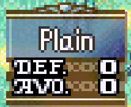

After the meeting last week, I understood that it is important to somehow create the state of the map for the neural network to actually understand the game. So I decided that this week, my main goal will be figuring out the way to let the program retrive the state of the battlefield.
The first information I was trying to get is the terrain, a crucial element of the battlefield in any turn-based strategy games. As shown above, when the cursor moves around the map in the game, the terrain screen shows up telling the player info regarding the terrain, including what it is, as well as the defence and avoidance bonuses for units standing on the terrain. Because the information showed up on the screen, I assumed that it would be in the memory somewhere. So I can easily searched it up somehow.
I started by trying to search the terrain changes with the changed and unchanged searches. If I am able to obtain the terrain information at the current cursor, I can program to get the terrain information by simply do a full map scan at the start of the level with cursors and check the terrain at each location. So I'd move the cursor between different terrains and search for changes in memory when the terrain changes. After a lot of attempts, I could not find the corresponsing variables, and can't find the root cause of the inconsistensy in the searches. In some searches, the search would not converge, while in some other searches, the search ended without any result. After a few debugging, I noticed the issue, while for some terrains, there is some values in memory that consistently changes. It does not change for the woods terrain, village terrain, and plain terrain somehow. They all share the same value at that address. I have tried to search the defence and avoidancce bonuses as well, since they are somewhat unique to each terrain and can be used to identify the terrain if searchable, but they somehow are not showing up in terrain either.
Because searching up the terrains turns out to be difficult, and the fact that terrains stay the same during the level. I have decided to just manually entered the terrain information for now. The fact that levels are not randomly generated means that I can simply hard code the terrain info for each level so the neural network will get the context for each level.
After kind of giving up on the terrain searches, and deciding to solve it with a brute-force approach, I have come to the more important step. The neural network needs to know the locations and powers of each unit, and those can't be hard coded since they are constantly moving around the map, and changes based on the result of the battles. They must be dynamically updated each turn, or even after each action.
The full map scan with cursor approach turns out to work fine this time with the use of R button. The R button usually does nothing when it is pressed on empty terrains. But when it is pressed, the stats screen above shows up, with the stats of the selected unit showing. But what is more important is the thing that happens in the memory space. In the memory, the stats of this screen are all saved near other around the 203a500 range. They are defaulted to be Seth's values and they stay there until a new stats screen shows up. So not only can it be used to check the power of units, it can also be used to check whether there is a unit on the specific location. If there is a unit, then the values will be updated when R key is pressed, and if there isn't, it will stay the same after the press.
Whether the unit is enemy or not can be easily determined by a previously found variable that is 1 when the unit can be moved. So at the start of the turn, the value will be 1 for each of the friendly unit, and 0 for the enemies.
So the approach to get each unit becomes obvious. Start by moving the cursor to the top left corner of the map and set that to be 0 and 0. Then search the entire map by moving the cursor around the map and pressing R key to check whether the values changed. If any of the value changed, then there is a unit at the space. At that point, check whether it is a friendly unit or not by checking whether the player can move it. Whether it is or not, record the unit's power level and location. By doing this for the whole map, the info can be updated dynamically each turn.
Next week, the starting task will be to figure out how to figure out how to calculate the exact moving range based on the obtained info of the units and the terrains. After that, I should be able to start training the neural network. The neural network can use the state at the start of each turn to look for the best turns possible.